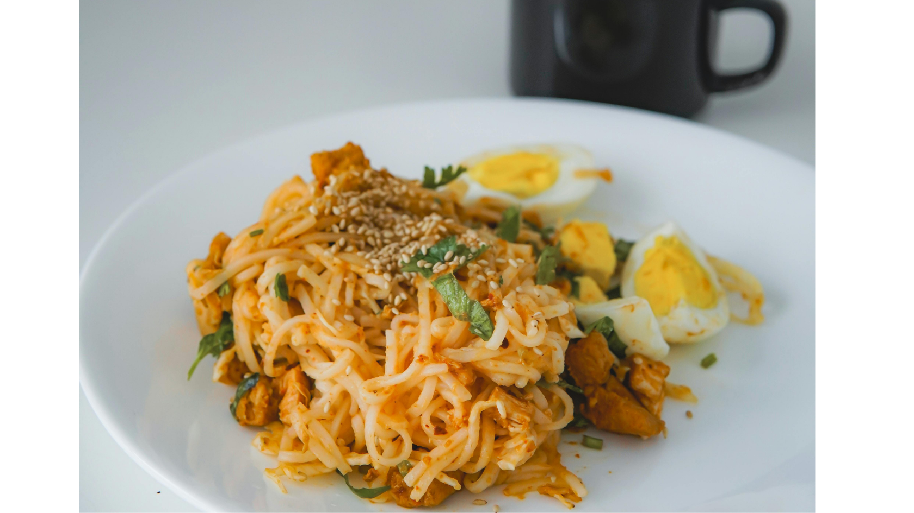
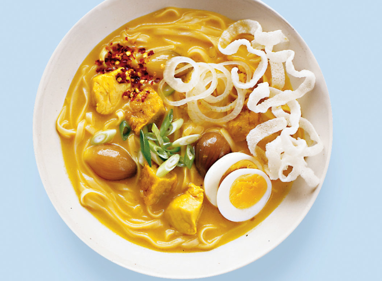
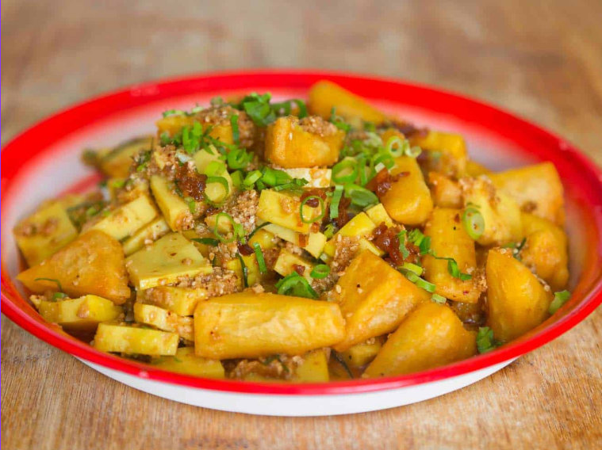
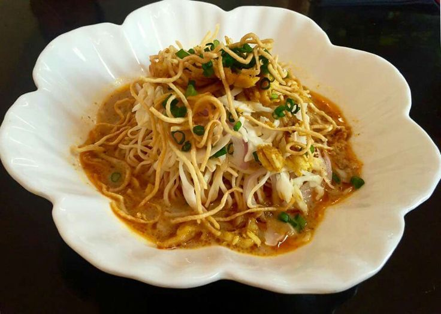
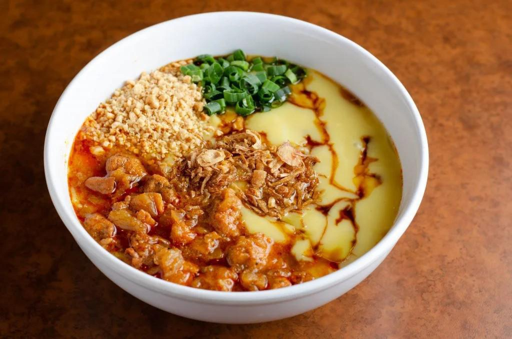

Popular Burmese Food
Burmese Dishes

Shan Noodle
Shan noodles is a popular Burmese dish from Shan State, featuring rice noodles in a flavorful tomato-based sauce with minced meat, garlic,peanuts, celery. Often served dry or with soup, this's taple of Shan cuisine.
View Recipe
Mohinga
Mont-hin-gah is a traditional Burmese fish soup made with catfish, turmeric, lemongrass, and rice noodles. It’s a popular breakfast dish in Myanmar, known for its rich, savory flavor and served with crispy fritters and fresh herbs.
View Recipe
Tea Leaf Salad
Tea Leaf Salad, or Lahpet, is a traditional Burmese dish made from fermented tea leaves, mixed with crunchy peanuts, sesame seeds, fried garlic, chili and cabbages. It’s a flavorful, tangy salad often served with tea.
View Recipe
Coconut Noodles
Coconut Noodles, or "Ohn No Khao Swe," is a popular Burmese dish made with egg noodles in a creamy, coconut milk-based soup. It's typically served with chicken, boiled eggs, and garnished with fried onions.
View Recipe
Noodle Salad
Burmese noodle salad, like Kyar Zan Thoke, features glass noodles, chicken, peanuts, herbs, and a tangy lime-fish sauce dressing. Light and flavorful, it's a refreshing favorite in Myanmar’s cuisine.
View Recipe
Tofu Salad
Tofu Salad is a Burmese dish featuring crispy fried tofu, fresh vegetables, and a zesty dressing made with lime, fish sauce, garlic, and chili. It’s a popular appetizer or side dish, offering a balance of savory and tangy flavors.
View Recipe
Rakhine Monti
Rakhine Mont Ti is a traditional dish from the Kachin region of Myanmar, featuring rice noodles in a savory, flavorful broth. It is topped with meat, herbs, and spices, making it delicious meal.
View Recipe
Shwe Taung Noodle
Shwe Taung Kauk Swal is a burmese noodle dish with thin rice noodles in savory broth, topped with fried garlic, peanut and vegetables for a flavorful, comforting for every meals mostly served in breakfast.
View Recipe
Nan Gyi Thoke
Nan Gyi Thoke is a popular Burmese noodle salad made with thick rice noodles, chicken and boiled eggs. Tossed in flavorful dressing of turmeric, chili oil, peanut powder, fish sauce, it’s a savory, satisfying dish.
View Recipe
Ngar Htamin
Ngar Htamin, or Burmese fish rice, is a savory dish made with flaked fish, turmeric-infused rice, and aromatic seasonings. Often garnished with crispy shallots, herbs, and chili, it offers a rich flavor enjoyed across Myanmar.
View RecipeHtamin Thoke
Htamin Thoke is a flavorful Burmese rice salad mixed with tamarind, fish sauce, fried shallots, garlic oil, and chili. Often topped with crispy beans, peanuts, and boiled eggs, it’s a tangy, savory, and aromatic dish enjoyed across Myanmar.
View Recipe
Tofu Nway
Burmese Tofu Nway is a warm, creamy noodle dish made from chickpea flour-based tofu. Popular in Myanmar, it features a rich, savory broth, often topped with crispy garlic, chili oil, and fresh herbs, offering a comforting, hearty flavor.
View Recipe